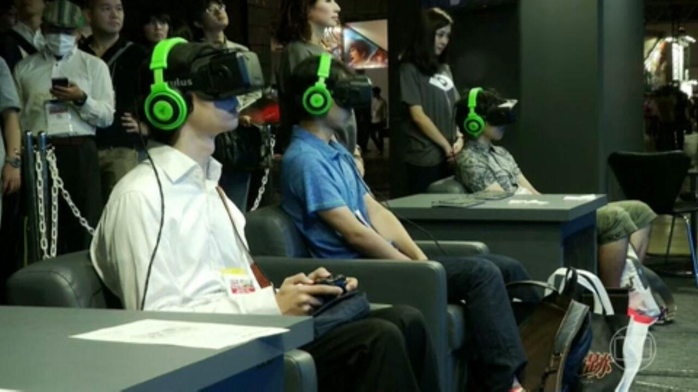
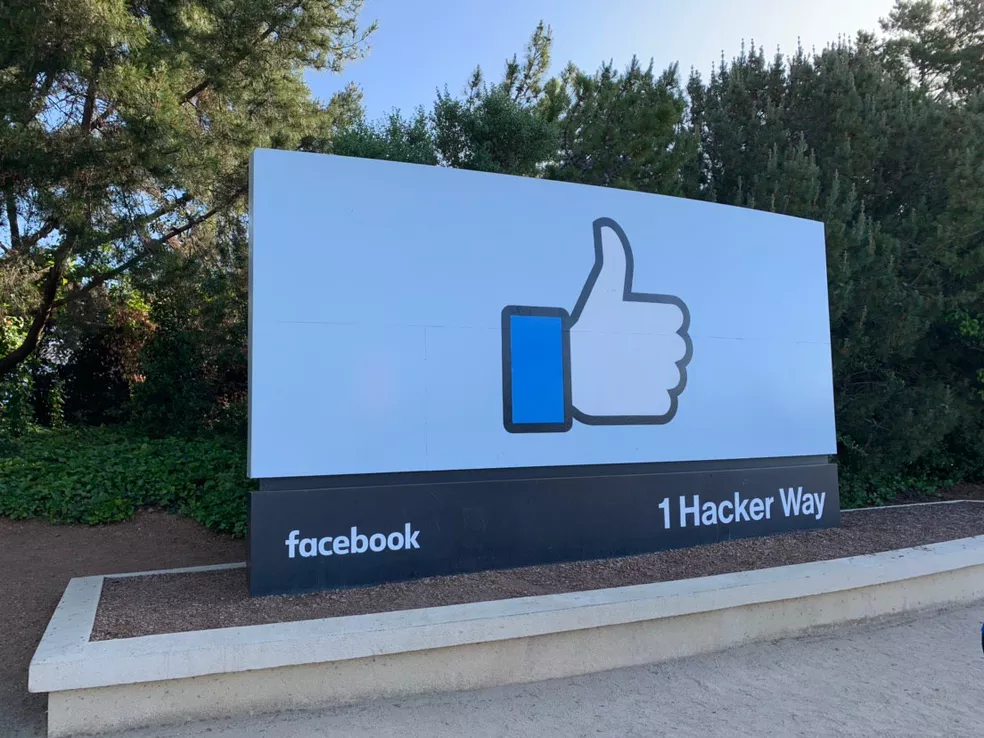
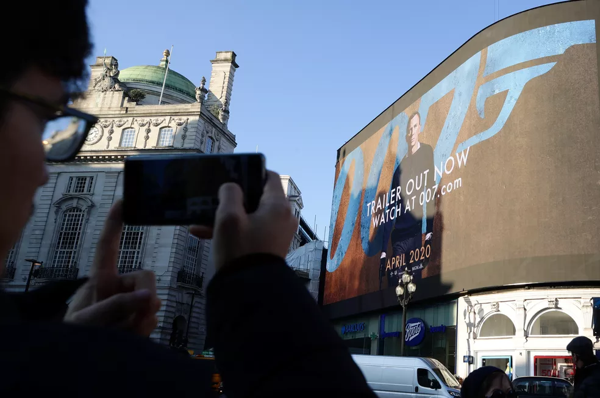

Relembre negócios bilionários envolvendo empresas de tecnologia
A compra do Twitter pelo empresário Elon Musk marca mais um capítulo de negócios bilionários envolvendo o setor de tecnologia.

O empresário Elon Musk chegou a um acordo para comprar a rede social Twitter por US$ 44 bilhões. Setor tem sido marcado por negócios bilionários nos últimos anos. Com a compra, segundo o Twitter, a companhia passa a ser uma companhia de capital fechado.
Pelo acordo, os acionistas vão receber US$ 54,20 em dinheiro por cada ação comum, o que significa um prêmio de 38% sobre o preço dos papéis em 1º de abril.
Microsoft e Activision Blizzard

Em janeiro deste ano, a Microsoft anunciou a comprar da Activision Blizzard, uma das maiores empresas de games do mundo, por US$ 68,7 bilhões.
Com o negócio, a Microsoft se tornou a terceira maior empresa de games do mundo, por reunir a plataforma e os estúdios do Xbox e o portfólio da Activision, que inclui jogos como "Call of Duty", "Overwatch", "Warcraft", "Candy Crush" e a franquia de Tony Hawk.
Facebook e WhatsApp

Em outubro de 2014, o Facebook finalizou a aquisição do WhatsApp por cerca de US$ 22 bilhões. O negócio foi anunciado em fevereiro daquele ano.
O fundador do WhatsApp, Jan Koum, recebeu quase US$ 2 bilhões em ações.
Amazon e MGM

Em março deste ano, a Amazon concluiu a compra dos estúdio cinematográfico MGM. A aquisição, que teve início em maio de 2021, envolveu US$ 8,45 bilhões.
Com a aquisição, o catálogo de cerca de 4 mil filmes e 17 mil programas de TV do estúdio passou a "complementar" a plataforma de streaming Prime Video, da Amazon, e os estúdios da empresa.